PhD Student · Robot Learning · Montanuniversität Leoben, Austria
I am a PhD student and doctoral researcher at the Chair of Cyber-Physical Systems at Montanuniversität Leoben, advised by Prof. Elmar Rückert. I work on skill learning for humanoid robots (Unitree G1, R1), targeting industrial production and logistics tasks.
More broadly, my research lies at the intersection of robot learning, reinforcement learning, and embodied AI, with a focus on dexterous manipulation and generalist robot policies. Before this, I was a junior researcher at the AI for Robotics Lab (FER, University of Zagreb), and I completed my MS in Robotics at Nazarbayev University.
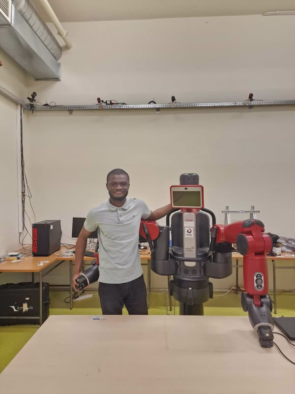
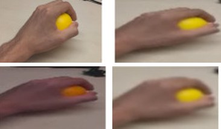
A Time and Object Aware Transformer-Based Method for Structured Hierarchical Gesture Recognition
Robotics and Autonomous Systems, Art. no. 105518, 2026
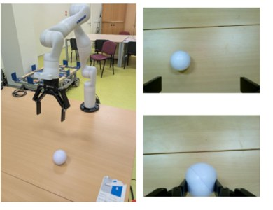
Spatially Aware Value Fusion in Decomposed Reward Architectures for Marine Manipulation
23rd IFAC World Congress, Busan, Republic of Korea, 2026
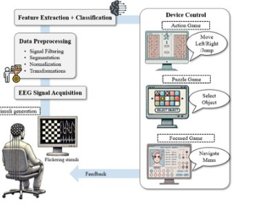
IEEE Access, vol. 13, pp. 74944–74966, 2025
Challenges and Opportunities of Artificial Intelligence in African Health Space
Digital Health, vol. 11, Art. no. 20552076241305915, 2025
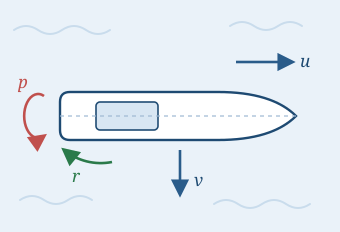
APO-Optimized ARX-Based System Identification of a Ship Maneuvering System
IEEE 22nd International Multi-Conference on Systems, Signals & Devices (SSD), Monastir, Tunisia, 2025
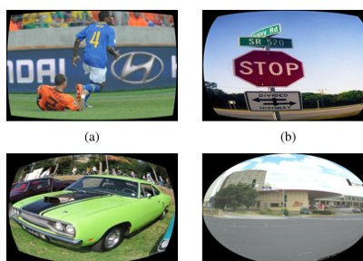
Field of View Invariant Object Recognition Using Non-Linear Transformation Augmentation
IECON 2024, 50th Annual Conference of the IEEE Industrial Electronics Society, Chicago, IL, USA
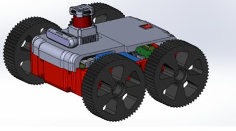
Cloud-Integrated Navigation System for Scalable Autonomous Ground Robots
30th International Conference on Mechatronics and Machine Vision in Practice (M2VIP), Leeds, United Kingdom, 2024
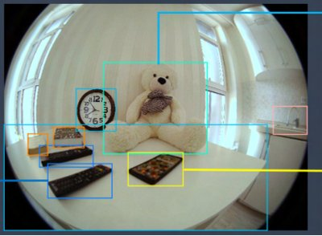
A Data-Centric Approach for Object Recognition in Hemispherical Camera Images
IECON 2023, 49th Annual Conference of the IEEE Industrial Electronics Society, Singapore
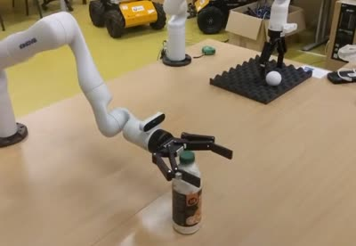
Released pipeline (v1.0.0): demonstration collection, hand-eye calibration, TFDS/RLDS conversion, training, offline evaluation, and live deployment around a latency-aware receding-horizon controller.
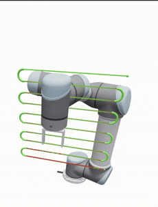
open-planning/roboplan · contributor
Six merged pull requests adding dual end-effector support, a Cartesian trajectory type, acceleration and jerk limits, Jacobian base-frame support, and keyboard teleoperation.
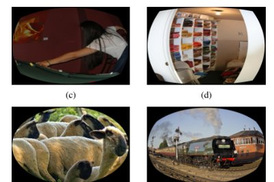
Converts perspective object-detection datasets (COCO, Objects365) into fisheye and wide-FoV training data via eight lens-distortion transforms with matching bounding-box remapping; generalizes the IECON 2024 pipeline into a pip-installable, tested package.
Doctoral Researcher — Chair of Cyber-Physical Systems
Montanuniversität Leoben · Leoben, Austria
Junior Researcher — Artificial Intelligence for Robotics Lab
FER, University of Zagreb · Zagreb, Croatia
Research Assistant — Robot Control and Learning Lab
Nazarbayev University · Astana, Kazakhstan
Research Assistant — Institute of Smart Systems and Artificial Intelligence
Nazarbayev University · Astana, Kazakhstan
Undergraduate Research Assistant
Dept. of Electrical & Electronics Engineering, University of Ilorin · Nigeria
PhD in Robot Learning
Montanuniversität Leoben · Leoben, Austria
Advisor: Prof. Elmar Rückert · Chair of Cyber-Physical Systems
MS in Robotics
Nazarbayev University · Astana, Kazakhstan
GPA 3.7/4.0 · Dean's Honor List (Spring & Fall 2023) · Abay Kunanbayev Scholar
Thesis: Enhanced Object Recognition in Hemispherical Images using Data Augmentation and Synthetic Image Integration
Advisor: Prof. Huseyin Atakan Varol
BEng in Electrical & Electronics Engineering
University of Ilorin · Ilorin, Nigeria
First Class Honors · Top 1% of graduating cohort
Thesis: Attendance Monitoring System using RFID and Fingerprint
Advisor: Dr. I.O.A. Omeiza